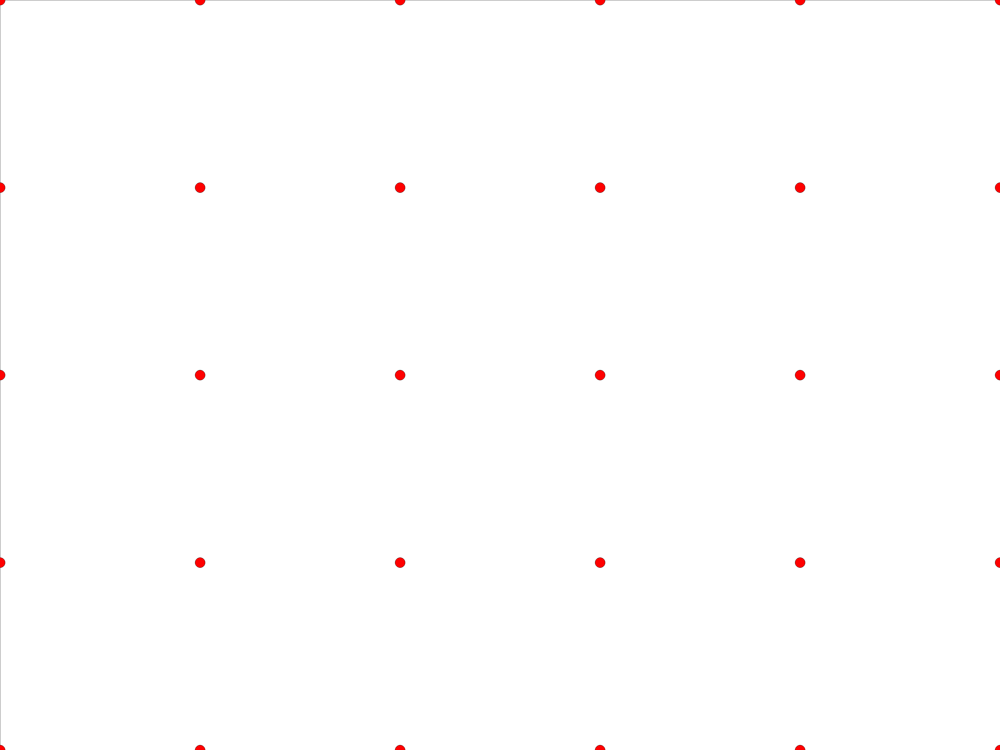
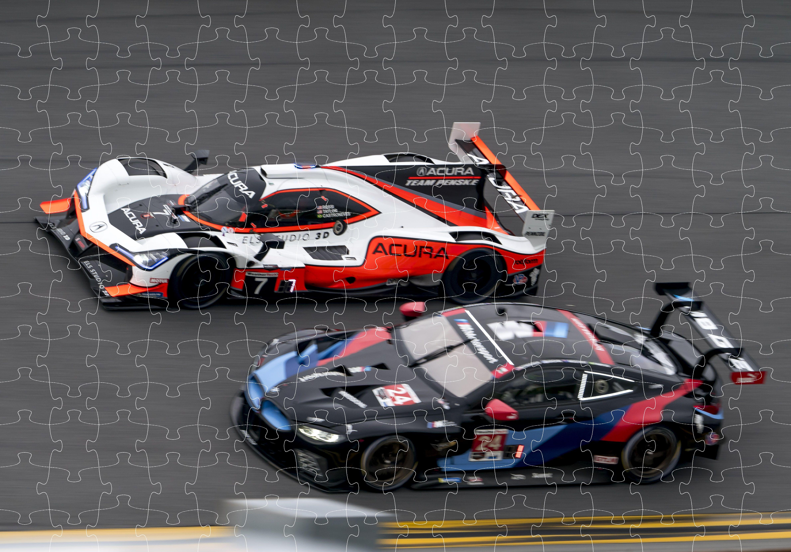
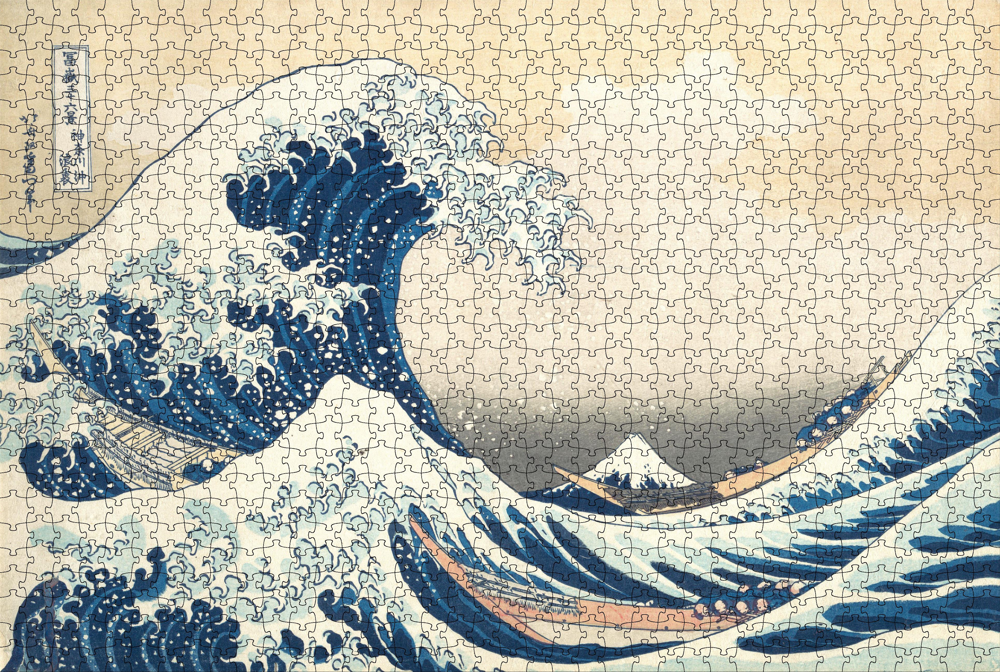

Puzzle Generation
Introduction
A puzzle generator uses mathematical curves to create unique, interlocking pieces with seamless edges. It supports customizable designs like square, rectangular, or circular puzzles, with smooth or wavy edges for enhanced functionality and aesthetics. Combining geometry, curve generation, and visualization, this document details the inputs, design, and implementation process.
Piece Design
The design of puzzle pieces involves partitioning the puzzle's boundary into a grid and shaping the edges using curves. Each piece is defined by four edges—top, bottom, left, and right—ensuring adjacent pieces have mirrored and interlocking curves for a perfect fit. The curves are generated mathematically, with parameters like amplitude and frequency controlling the shape and complexity of the edges. The grid layout determines the number and arrangement of pieces, while the curves add uniqueness and aesthetic appeal. This approach allows seamless integration of all pieces, ensuring the puzzle is both functional and visually engaging.
Inputs
Inputs for Puzzle Generation
image_path = “your_image.png”
num_pieces = 2000
Data points are proportionally distributed according to the input image's aspect ratio and are dynamically calculated based on puzzle dimensions and design parameters. This implementation works on rectangular shapes.
Inputs for Curve Generation
point1 = (x_1, y_1) point2 = (x_2, y_2)
neck_factor = 1.2 width_factor = 1.2
height_factor = 0.5 vertical_pull = 0.1
Curves are generated between two points (point1 and point2) using control points calculated dynamically based on parameters like neck_factor, width_factor, height_factor, and vertical_pull. These parameters define the curve's shape and size, creating smooth, interlocking edges. A Bézier curve function interpolates the points to form the desired curve. Flipping logic can be applied to invert the curve for added variability. Additional decorations can be applied to functions such as puzzle outline color and size.
Curves shape the interlocking edges of puzzle pieces, ensuring seamless fit and unique designs. Adjustable parameters control their shape, enabling functional and visually appealing puzzles.
Bézier curves are commonly used for curve generation due to their flexibility and precision. Other methods include spline interpolation, sinusoidal functions, and parametric equations, depending on the desired complexity and smoothness.
Implementation
For visualization I am using PIL library.
width = 4000 height = 3000 num_pieces = 20
Step 1: Generate Piece Corners
Start by defining the corner points for each puzzle piece, based on the puzzle's width, height, and the number of pieces. These points form the grid layout and set the foundation for the piece shapes.
The first step results in equidistantly placed corner points for the puzzle pieces.
{kind=link}

Step 2: Connect Points with Bezier Curve
Connect the corner points with Bezier curves to create smooth and wiggly edges for each piece, defining their boundaries and ensuring they fit together.

Step 3: Introduce Randomness to Flip Knobs
Randomly switch side of a puzzle knob direction to give it appealing puzzle look.

Visualization
Here are some of results applied to real images instead of white canvas.
{kind=link}


{kind=link}

{kind=link}